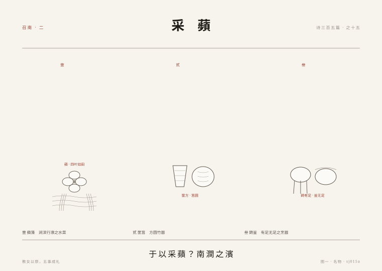
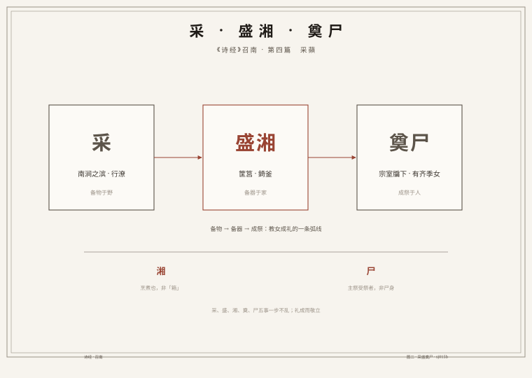

第十五篇 采蘋
召南 · 之二 SJ015
朗读 · 普通话
依经文正文朗读，句读从文；不配乐、不改速、不加拖腔。全库同一音色（豆包 TTS），非播音员录制。
一 解题
诗三判：
- 谁在说：一个观礼或记礼的人。三章八问，问的都是一件事：在哪里采，用什么盛，在哪里烹，在哪里奠，谁来主祭。
- 说什么事：采蘋、采藻；以筐筥盛之，以錡釜湘之；奠于宗室牖下，主祭者是那位恭敬的少女。
- 为何编在此：与《采蘩》为一对。蘩用于公侯之祭，蘋用于教女之祭；一写「奉」，一写「教」。召南写已成之后靠什么维持，此篇维持的是「礼」——把祭礼一步步教给将要成家的女子。
《毛序》：「《采蘋》，大夫妻能循法度也。能循法度，则可以承先祖，共祭祀矣。」——归到大夫妻能守法度。
朱子《诗集传》：「古之女子，将嫁而教之於公家，庶士大夫之妻，其家以其女为能循法度，而使之主祭。」——朱子点明「教女」与「主祭」两端，较《序》更近诗中「有齐季女」一句。
本库的看法：这首诗的骨在「教女以祭」。
采、盛、湘、奠、尸五事，一步一步都是礼；末章落回人——「谁其尸之？有齐季女」。全篇不问德，只问事；礼成了，人的恭敬也就立住了。
二 经文
第一章
于以采蘋？南澗之濱。于以采藻？于彼行潦。
第二章
于以盛之？維筐及筥。于以湘之？維錡及釜。
第三章
于以奠之？宗室牖下。誰其尸之？有齊季女。
分章：毛传、朱子皆三章，章四句。三章同用「于以」发问，一章一事故：采、盛湘、奠尸。问式复沓，事序递进；由水际而器用，而宗庙，最后落到主祭之人。
三 韵读
| 一 |
蘋、濱；藻、潦 |
真部；宵部 |
| 二 |
筥、釜 |
鱼部 |
| 三 |
下、女 |
鱼部 |
一章两联各自为韵：真部沉细，宵部上扬；二章三章皆鱼部，开口舒缓，正合器物与祭事的稳重。末章「女」字是这一篇的落脚声：事都备了，人出来主祭。
四 字义名物
- 于以——于何，在哪里。不是「于是」。
- 蘋——水草，四叶合成一叶，叶形扁圆如田字，生浅水中。不是浮萍；萍浮水面、叶小而裂，与蘋异物。旧本「采苹」为误字，本库正作「蘋」。
- 濱——水边。
- 藻——水藻，聚生水中，可食，亦用于祭。
- 行潦（háng
lǎo）——道路上的积水。行，道路；潦，雨水积聚。不是「行路潦倒」。
- 盛（chéng）——装，以器盛物。
- 筐——方形竹器。筥（jǔ）——圆形竹器。
- 湘——烹煮。不是「箱」，亦非水名「湘水」之湘。
- 錡（qí）——有足之釜，三脚锅。釜——无足之锅。
- 奠——置祭，祭品设于神前。
- 宗室——宗庙，大夫之家的祭庙。牖下——窗下。
- 尸——祭时主祭、代神受祭之人（立尸）。不是「尸身」「尸体」。
- 有齊——齊读
zhāi，恭敬庄敬之貌。季女——少女，排行幼小之女。
五 今译
第一章
在哪里采蘋？南山涧的水边。在哪里采藻？那一道路上的积水旁。
第二章
用什么装它？方筐与圆筥。用什么煮它？有足的錡与无足的釜。
第三章
在哪里设祭？宗庙的窗下。谁来主祭？那位恭敬的少女。
译注：「湘」译「煮」，「尸」译「主祭」，「齊」译「恭敬」——三字最易被后世字面意思带走；「行潦」译「路上积水」，不作潦倒解。
六 章旨
一章：采。蘋在涧滨，藻在行潦——祭物取于最贱最野的水菜。
二章：盛与湘。筐筥以盛，錡釜以烹；器有方圆足无足，各当其用。
三章：奠与尸。奠于宗室牖下，主祭者是季女；五事至此成人。
三章合起来是一条教女成礼的弧线：备物（采）→ 备器（盛湘）→
成祭（奠尸）。 事序即教序，一步不乱。
七 诗教
- 赋：八问八答，直陈祭事之序，是赋中最见节目次第者。
- 观：可观一「敬」。敬不在夸饰，在器物、处所、人选一一合礼。
- 群：一女之教，承一族之祭；采者、烹者、主祭者，共成一事。
- 怨：无怨。全篇无一句及于嫁娶之难、身份之屈，只记礼之常。
八 分寸与边界
- 不可把「蘋」写成浮萍。蘋是四叶合成的田字水草，萍是浮水小叶；二物异体，旧本「采苹」不可改回。
- 不可把「湘」解作「箱」或湘水。毛传「湘，亨（烹）也」，是烹煮之义。
- 不可把「尸」解作尸身。此处为立尸主祭、代神受祭之人；与死亡无关。
- 不可把「齊」读作整齐之齊。有齊之齊读
zhāi，敬也；「有齐」即「俨然恭敬」。
- 不可把此篇读成「大夫妻守法度」的德教标本。《毛序》之说可存为解释史；诗里只有水菜、竹器、锅釜、宗庙窗下与一位少女。
九 存疑
- 季女身份：一说待嫁之女（将嫁而教），一说大夫之妻，一说宗妇。本库从朱子「教女」之说，不坐实夫家。
- 蘋与藻之别：蘋为田字草，藻为聚藻；一说二者皆水中菜、可通称。本库分列为二物。
- 「行潦」之解：一说道路积水，一说沟洫之水。本库从前说。
- 錡、釜形制：錡有足、釜无足，为毛传、郑笺之说；一说錡釜皆釜类、足否无定论。本库从毛传。
- 编次之疑：《采蘩》《采蘋》同以「于以」发问，一说本为一组祭歌，后分系于公侯夫人与教女；本库存录，不改篇次。
十 跨典
- 《召南·采蘩》「于以采蘩？于沼于沚」——同问式姊妹篇。彼为公侯之祭，此为教女之祭；蘩蘋蕰藻，同为水菜之荐。
- 《左传·隐公三年》「蘋蘩蕰藻之菜……可荐于鬼神，可羞于王公」——微物亦可成祭，正此篇之旨。
- 《礼记·昏义》「教成之祭，牲用鱼，芼用蘋藻」——教女成而后祭，此篇「有齐季女」即其事之诗。
- 《礼记·祭统》「孝子之祭……不敢以私」——祭有常器常处；筐筥錡釜、宗室牖下，皆是礼之常。
- 《小雅·我行其野》「蔽芾其樗」之「蔽芾」与《甘棠》同名物，可对看草木之起兴。
十一 双卡与图
双卡五对：
| 蘋（田字水草） |
萍（浮水小叶，误混） |
| 筐（方器） |
筥（圆器） |
| 錡（有足之釜） |
釜（无足之锅） |
| 湘（烹煮） |
箱（误训） |
| 尸（主祭受祭者） |
尸身（误训） |

图一 · 蘋藻 · 筐筥錡釜 名物图

图二 · 采 · 盛湘 · 奠尸 义理图
读图三处：
- 蘋叶是四叶合一：一叶之中四瓣合成「田」字，生在浅水泥上；图左格画四瓣平展的叶，与浮萍的碎叶不同。
- 筐筥方圆、錡釜有无足：中二格竹器一圆一方，锅釜一带三足、一不带足；形制之别即器用之别。
- 牖下是宗庙窗下：右格只画窗与阶下之位，不画神像；「尸」是人，不是被祭的对象。